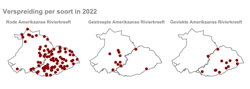
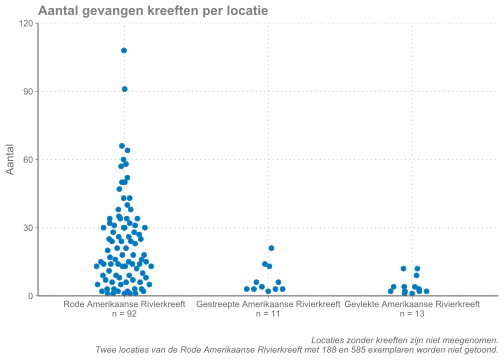
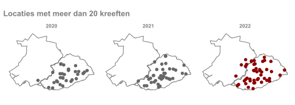

Hoofdstuk 3 Resultaten
3.1 Totaal vangsten
In de onderstaande figuur is per locatie weergegeven hoeveel kreeften er gevangen zijn.2 Op 64 van de 65 locaties (98%) in de Krimpenerwaard zijn uitheemse rivierkreeften gevonden. In Schieland zijn op 34 van de 49 locaties (70%) kreeften aangetroffen.
De grootste aantallen kreeften zijn aangetroffen in Moordrecht (Schieland), en rond Berkenwoude (Krimpenerwaard). Aan de noordoostkant van de Krimpenerwaard en in de rest van Schieland waren de aantallen kleiner. Het grootste aantal kreeften op één locatie was 108 in de Krimpenerwaard, en 585 in Schieland. Dit is een verrassend hoge uitschieter. Tot nu toe was het hoogste aantal gevangen kreeften 101 in 2020. Hoe het kan dat er op een locatie zoveel kreeften voorkomen is niet duidelijk.

3.2 Vangsten per soort
In het gebied zijn dit jaar drie soorten uitheemse rivierkreeften gevonden. De Gevlekte, Gestreepte, en Rode Amerikaanse Rivierkreeft. Van deze drie soorten is de Rode Amerikaanse Rivierkreeft verreweg het meest gevonden. Deze is op 92 van de 114 locaties (81%) met kreeften gevonden. De overige soorten zijn 13 en 11 keer gevonden, meestal in lage aantallen. Op 17 locaties zijn twee verschillende soorten aangetroffen, en op één meetpunt zijn drie soorten gevonden. De Geknobbelde Amerikaanse Rivierkreeft is sinds 2020 niet meer gevangen.

De Rode Amerikaanse Rivierkreeft komt niet alleen op de meeste locaties voor, maar heeft ook de grootste aantallen per locatie, tot maximaal 585 exemplaren. Het aantal van 585 is extreem hoog. Aantallen tussen de 10 en de 50 komen het meest voor. De Gestreepte Amerikaanse Rivierkreeft is met maximaal 21 exemplaren gevonden. Op de meeste locaties zijn er slechts enkele kreeften aangetroffen. Van de Gevlekte Amerikaanse Rivierkreeft zijn met 1 tot 9 kreeften de laagste aantallen gevangen.

3.3 Ontwikkelingen
Dit jaar is het verspreidingsonderzoek voor de derde keer uitgevoerd. In de Krimpenerwaard zijn de kreeften wijdverspreid, en worden er op veel locaties 10-40 kreeften gevonden. In Schieland worden op minder locaties kreeften gevonden en zijn de aantallen kleiner. In Schieland zijn vooral langs de Hollandse IJssel kreeften aanwezig.
In 2022 is de verspreiding van kreeften in de Krimpenerwaard vergelijkbaar met eerdere jaren. Wel zijn de gevangen de aantallen gemiddeld iets toegenomen. In Schieland zijn de kreeften in een groter gebied gevonden. Vooral tussen Waddinxveen en Zoetermeer zijn kreeften op meer locaties aangetroffen. Dit zijn vooral de Rode Amerikaanse Rivierkreeften.
De Gestreepte en Gevlekte Amerikaanse Rivierkreeft zijn allebei relatief weinig aangetroffen. Ze zijn min of meer in hetzelfde gebied aangetroffen als in 2021. De Gestreepte Amerikaanse Rivierkreeft is dit jaar in Schieland verder van de Hollandse IJssel aangetroffen, maar is in de Krimpenerwaard afgenomen. De Gevlekte Amerikaanse Rivierkreeft is binnen de Krimpenerwaard meer in het zuidoosten gevonden dan vorig jaar. De Geknobbelde Amerikaanse Rivierkreeft, die in 2020 nog op 2 locaties werd gevonden, is sindsdien niet meer aangetroffen.

Kreeften hebben een negatieve invloed op het voorkomen van waterplanten. Als er op een locatie meer dan 20 kreeften worden gevangen dan blijkt uit onderzoek dat er dan geen onderwaterplanten meer voorkomen. Op de onderstaande kaart is weergegeven op welke locaties meer dan 20 kreeften zijn gevangen. In de Krimpenerwaard zijn op veel plekken meer dan 20 kreeften gevangen. In de Krimpenerwaard is de hoeveelheid onderwaterplanten ook sterk afgenomen. In Schieland zijn alleen op enkele plekken langs de Hollandse IJssel meer dan 20 kreeften gevangen.

3.4 DNA-onderzoek
Naast het onderzoek met kreeftenkorven is ook op tien locaties eDNA3 bemonsterd. Op zeven van de tien locaties werd het DNA van kreeften gevonden. Met de kreeftenkorven zijn echter op alle 10 locaties kreeften gevangen. Hieruit blijkt dat de methode met DNA (nog) niet betrouwbaar is om de aanwezigheid van kreeften aan te tonen.
Op zeven plaatsen werd wel het DNA van kreeften aangetroffen. Op deze locaties is de hoeveelheid eDNA echter niet vergelijkbaar met de hoeveelheid gevonden kreeften. Soms werden er (zeer) veel kreeften gevonden maar geen eDNA, en ook werd zeer veel eDNA gevonden op een locatie met weinig kreeften. Op twee locaties werd eDNA gevonden van Gevlekte Amerikaanse Rivierkreeften die niet in de fuiken zijn gevonden. Omdat het eDNA lage aantallen suggereerde kan het per toeval zijn dat deze kreeftensoort niet in de fuiken is gevonden. Door de verschillende uitkomsten qua aanwezigheid en aantallen lijkt eDNA onderzoek voor de kreeften op dit moment nog geen volwaardig alternatief voor onderzoek met kreeftenkorven.
De vangsten per locatie per soort zijn ook opgenomen in bijlage Vangsten per locatie↩︎
eDNA - environmental DNA. Dat is DNA van dieren en planten dat zij in het water achterlaten.↩︎